Programa de ejemplo
Ver código de Grafo en JuliaEl lenguaje de programación Julia ha sido diseñado para disponer de las ventajas de un lenguaje dinámico con el rendimiento de un lenguaje compilado. Esto se consigue en parte gracias a la utilización de un compilador JIT (just-in-time) basado en LLVM (Low Level Virtual Machine) que permite generar código máquina nativo.
Para la escritura de código, se puede utilizar cualquier editor de texto, existen entornos de desarrollo (IDE) que actúan como extensiones de editores de texto, un ejemplo es Juno el cual es un IDE que puede instalarse mediante el editor de texto, Atom. Para ejecutar un código existen alternativas, eso sí, ya tienes instalado julia en tu computador, de no ser así te invito a ver artículo instalación Julia. Una de estas alternativas es tener instalado el compilador de Julia, luego instalar las extensiones de un editor de texto como Atom o Visual Studio Code y ejecutarlo directamente desde las terminales de estos editores. Otra opción es abrir el compilador julia:

E insertar la ruta del archivo usando la siguiente sintaxis:
Include("Ruta/ carpeta 1/archivo.jl ")
Con esto el programa empezará su ejecución dentro de la misma ventana del compilador.
Para evitar fallos o simplemente no se ve a la necesidad de instalar Julia, les dejo un compilador online en el cual podrá ver por completo el código y ejecutarlo, este se encuentra al final del articulo.
El problema
Primero veremos de que se tratá el programa...
El problema es el siguiente:
Desarrollar un programa que calcule la distancia más corta entre dos nodos de un grafo. El programa recibirá como entrada la especificación de un grafo (nodos y enlaces con peso, el nodo inicial y el nodo final). La salida del programa será la lista de nodos desde el inicial hasta el final y el peso de ese camino que debe ser el mínimo. Por ejemplo, supongamos el siguiente grafo, donde el nodo inicial es 1 y el final es 8:

La ruta más corta es 1, 3, 6, 4, 8 con un peso de 24. Se puede resolver el problema implementando el Algoritmo de Dijkstra.
Para generar un grafo, solo necesita:
1. Generar un nuevo grafo con un máximo de vertices
2. Agregar los vertices que necesites, sin pasarse del máximo de vertices
3. Enlazar los vertices con sus respectivos pesos
Luego de esto usted podrá usar la opción de >encontrar recorrido más corto.
Cabe destacar que el programa ya viene con un grafo de ejemplo(imagen), esta función se encarga de generarlo.

Las estructuras utilizadas
Para la implementación de este problema se utilizó los tipos de datos:
Struct
El cual se emplea para representar las estructuras de Vertice y Grafo.
Es una tipo de dato importante ya que nos permite agrupar otros tipos de datos, como en el caso de Grafo, el cual agrupa:
Un Array de dimensión 2, para representar una matriz de adyacencia, que nos servirá para representar un grafo.
Un entero que nos sirve para conocer el numero de vertices que el grafo tiene actualmente.
Un array de dimensión 1 que nos sirve para almacenar los vertices de un grafo.
Cabe destacar que se usaron un modificador para estas estructuras que son los mutable, lo que esto significa es que los datos de la estructura pueden modificarse, si esto no lo tuviera no podriamos modificar estos datos.

Métodos
Los métodos son estructuras que tienen el funcionamiento de una función, pero es mucho más simple, y estos mayormente se utilizan para retornar valores que no necesitan muchas operaciones.
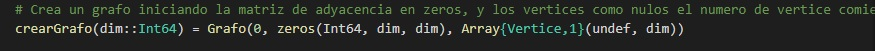 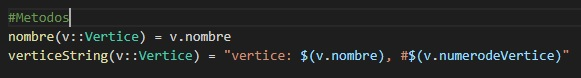Funciones
Las funciones son algo muy importante para la elaboración de este programa, ya que en la mayoría se basa en llamar a funciones, donde muchas de estas tienen como parámetro una variable de tipo Grafo, ya que estás funciones son para utilizarse en un grafo.
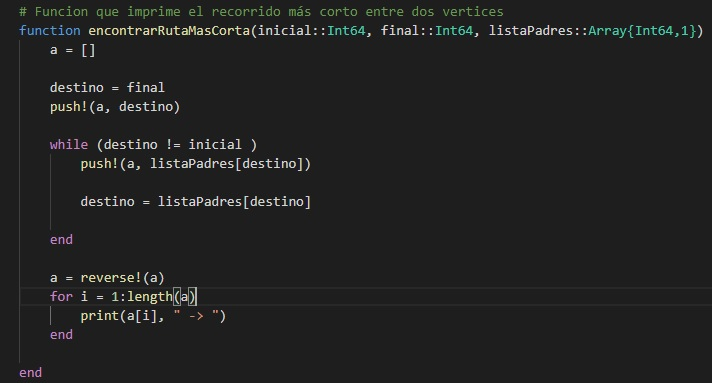 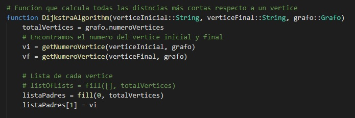Arrays
Los arrays son muy importantes, ya que nos sirven para representar los vertices y aristas de los grafos. Para la representación de un grafo es necesario utilizar una matriz de adyacencia o una lista de adyacencia, que son las estructuras más utilizadas para representar un grafo. Por lo tanto sin este tipo de dato el programa simplemente no funcionaría.
Para este programa se utilizó una matriz de adyacencia
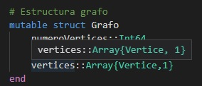 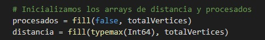Las funciones fill retornan un array, con las especificaciones de sus parámetros.
Ejecución
Al momento de ejecutar el archivo Grafos.jl, se presenta el siguiente menú:
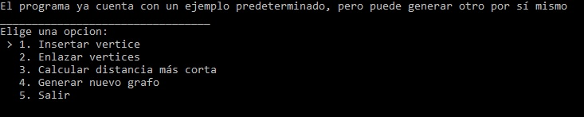Visto esto lo único que necesita es seleccionar una opción, con las teclas direccionales del teclado.
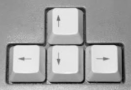Luego de esto está la opción de agregar vertice el cuál presentara un espacio para escribir el nombre, después de escribirlo solo presiona enter para continuar la ejecución.
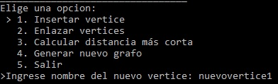La opción Enlazar vertices, primero muestra una lista de los vertices disponibles, luego de esto el programa pide que ingreses un nombre del vertice de origen luego el vertice destino, para enlazar estos dos vertices y después ponerles un peso a este enlace.
El listado de vertices nos dice: Vertice: Nombre de vertice #Numero de vertice.
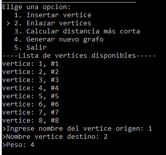La opción Calcular ruta más corta, nos presenta una lista de vertices, luego de esto nos pide ingresar un nombre para el vertice donde iniciará la ruta y el vertice destino, después de continuar dando enter comenzará a realizar los calculos, para luego imprimir en pantalla la distancia más corta entre el vertice origen y el destino, y la ruta de la que pertenece esta distancia.
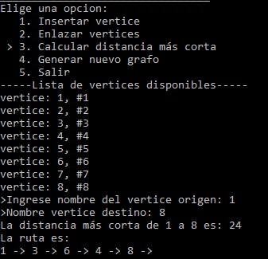La ultima opción es: Generar nuevo grafo, el cual presenta un espacio para escribir el máximo de vertices para el nuevo grafo, después de esto el grafo de ejemplo se perderá y podra agregar nuevos vertices y enlaces, para contruir un grafo desde cero.
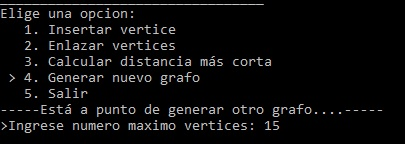El siguiente es el programa de ejemplo, solo necesita presionar ejecutar y el programa se iniciará, mostrandole un pequeño menú en el cual tendrá que seleccionar una opción.